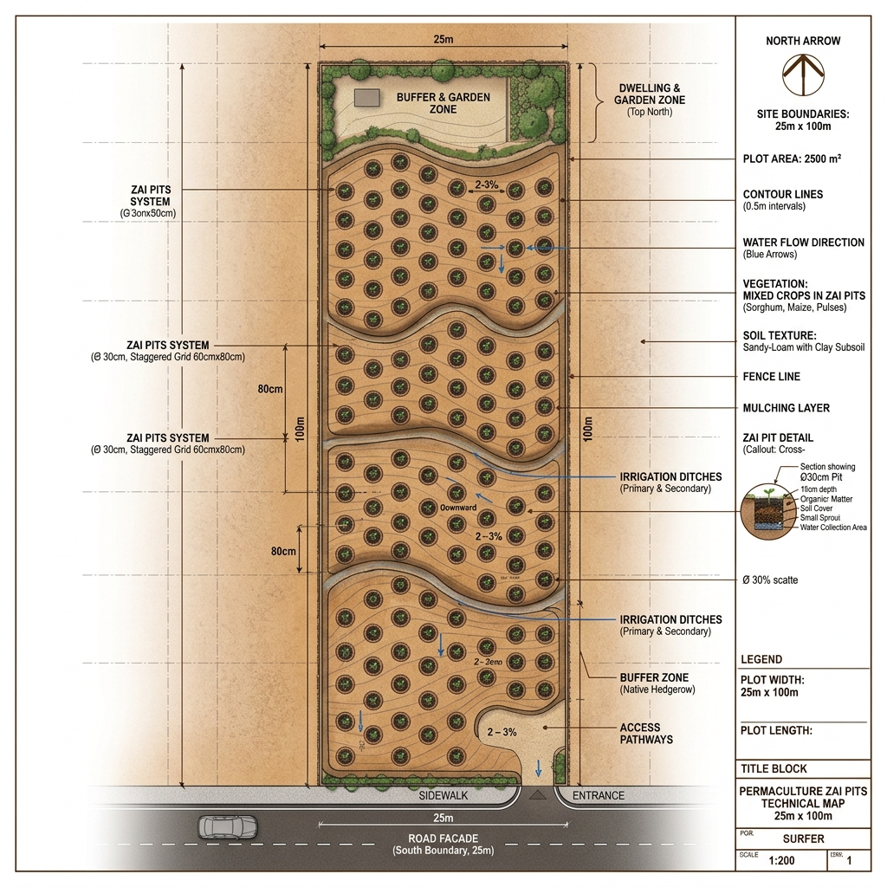

Site Intelligence Analysis
Arid Resilience Strategy
The site is located in the Groundnut Basin of Senegal. The high sand content (84%) presents a challenge for water retention but an opportunity for deep-rooting species. The semi-arid climate requires a strictly hydraulic-focused design.
- 🌱 Organic Matter: Low (7.5 g/kg) - Focus on mulching.
- 💧 Hydrology: Flash rains in July-Oct.
- ☀️ Exposure: High UV index, requires shade guilds.
Land Facade
25m Road Frontage
100m Depth (90° Angle)
Strategic Design Maps

1. Aider Guilds
Faidherbia albida (Agroforestry)

2. Zai Pits
Intensive Water Harvesting

3. Hydraulic Swales
Contour Erosion Control
Implementation Framework
Technique 1: The Aider (Faidherbia albida)
Planting Faidherbia albida in a 10m grid. This tree provides nitrogen fixation and reverse phenology—dropping leaves during the rainy season to fertilize millet crops while providing shade during the harsh dry season.
Technique 2: Zai Pits Swarm
Implementation of 30cm deep pits spaced 60cm apart. Pits are filled with compost and manure before the first rains. This method increases yields by up to 300% in sandy Sahelian soils.
Technique 3: Contour Swales
On-Contour Trenches
3 major swales excavated to catch sheet runoff. Berms planted with Vetiver grass for stability and Baobab/Cashew trees for economic value. Swales will be 2m wide and 0.5m deep.